Humming Room
2026. 4. 4–4. 25 울트라, 서울 ULTRA, Seoul, KR
전시 소개문
2026. 4. 4–4. 25 울트라, 서울 ULTRA, Seoul, KR
전시 소개문


2025. 3. 15–3.29 서울교육대학교 샘미술관, 서울 SNUE Art Museum, Seoul, KR
시린 겨울을 지나며, 생을 지탱하는 것들을 떠올렸다. 물결치는 듯한 거대한 세계 속에서 눈을 돌려 숨을 지닌 다른 존재를 찾으려는 몸짓이, 곧 '살아가는' 일과도 같다는 생각을 했다. 전시장 곳곳에 흩어놓은 세상의 조각들 사이로, 기대고 안기며 나란히 선 존재들의 모습이 그 사이를 비집고 들어서 있다. 흐르는, 버텨내는, 이어지는 숨들이 있다. (서문 중)


2025. 9. 5–9. 28 공간 일리, 서울 space illi, Seoul, KR
전시 소개문


2024. 10. 17–11. 14 갤러리 메일란, 서울 Gallery Meilan, Seoul, KR
사그라지는 것들, 또 그 가운데서도 다시 돋아나는 것들을 그린 스물두 점의 먹 드로잉들은 어떠한 수식어나 해석이 달라붙는 것을 방해하려는 듯 거칠게 그려져 있다. 이들은 하나의 무늬처럼 섞였다가, 때로는 또렷하게 드러난다. 칼비노의 표현처럼 ‘신화를 빈약하게 만들고 질식시켜 버리는’ 온갖 해석들은 뒤로하고, 눈앞의 풍경에 집중하자. 세상을 마주함에 있어, 머큐쇼처럼 ‘춤추고 날아오르고 찌르기’를 시도해 보자. 지독한 풍경들을 마주하기에 이러한 자세들은 다소 가벼워’ 보이지만, 가벼움이야말로 우리를 날아오르게끔 도와주는 것이니까.


전시 기간 전시공간 리플랫, 서울 RE:PLAT, Seoul, KR
전시 소개문
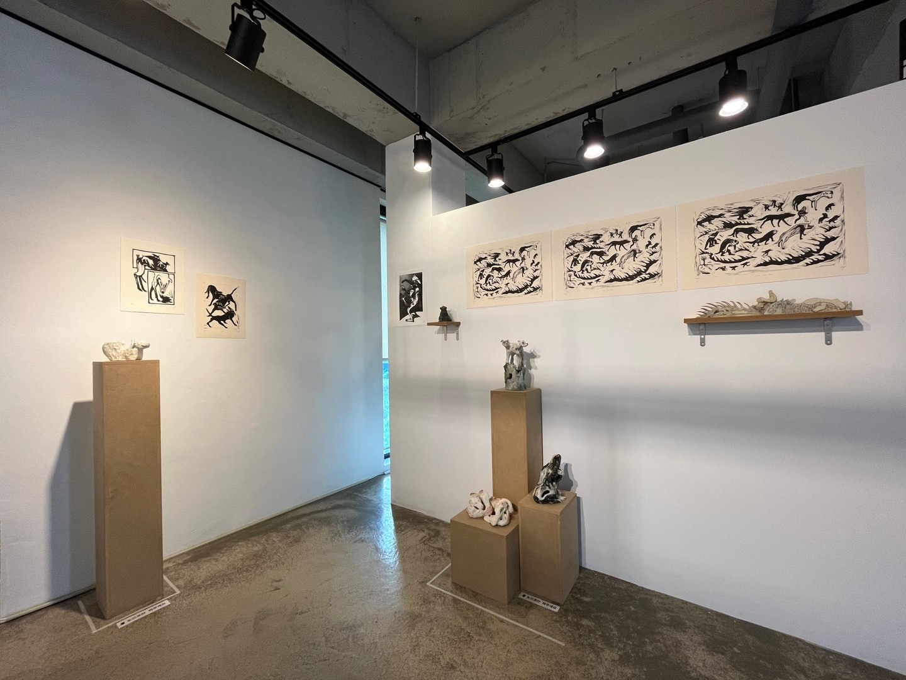
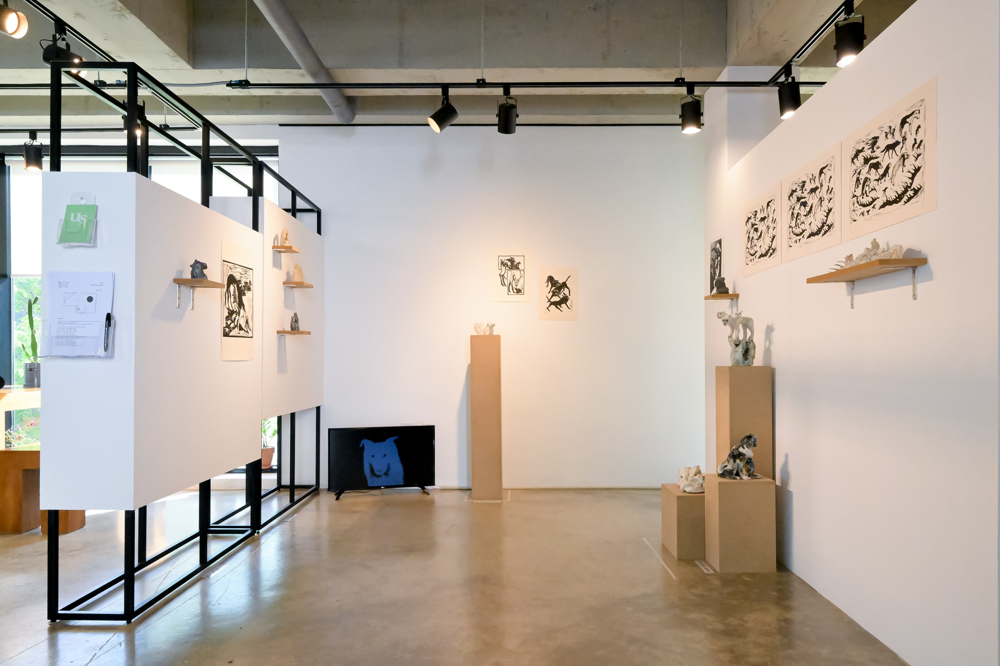
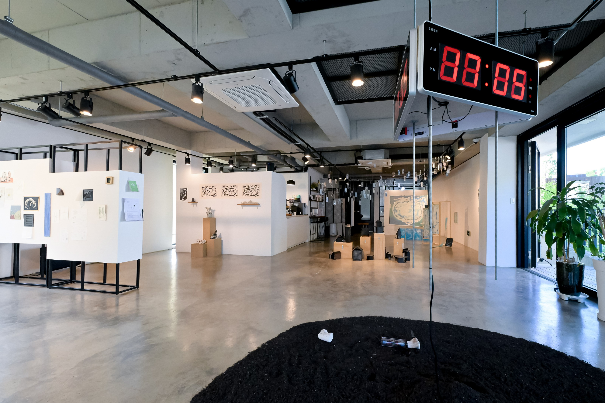
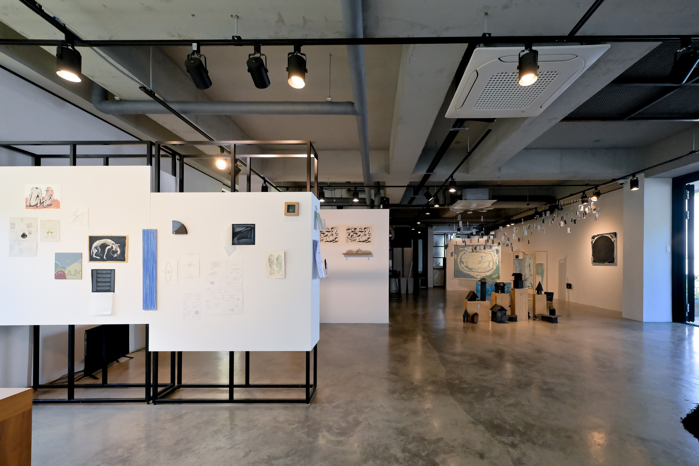

2024. 5. 9–6. 5 큐아트스페이스, 파주 Q-Art Space, Paju, KR
전시 소개문
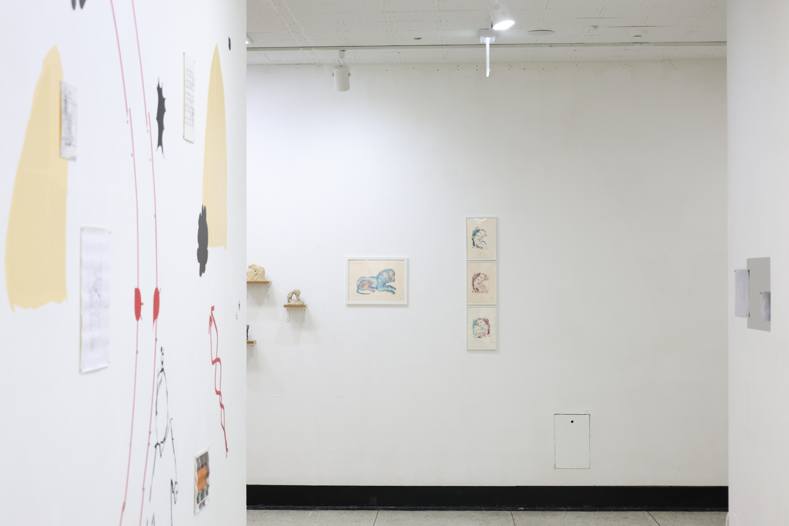
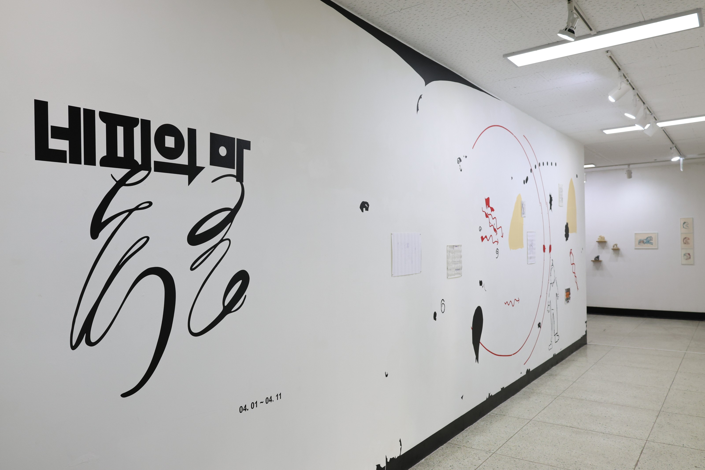
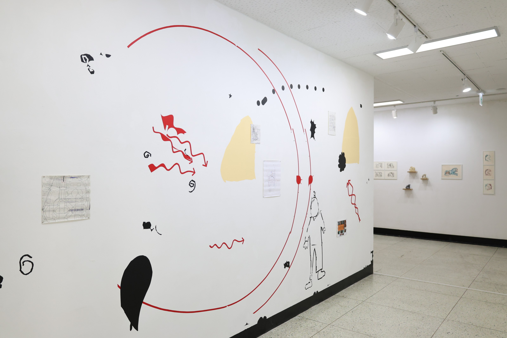
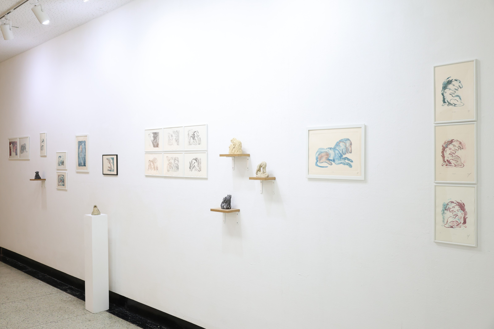
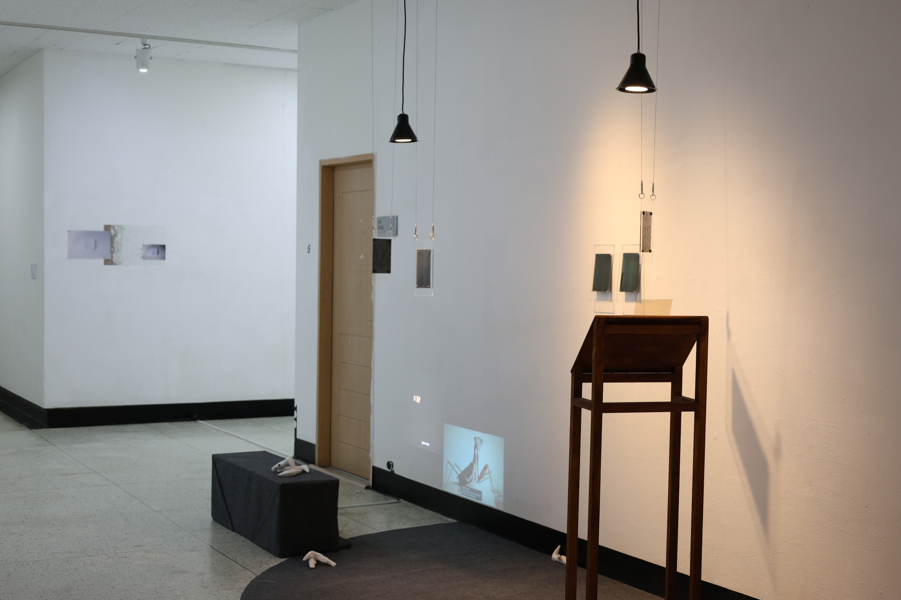
2024. 4. 1–4.11 한국예술종합학교 복도갤러리, 서울 Korea National University of Arts Theory Gallery, Seoul, KR
사마난추(駟馬難追): 네 필의 말(馬)이 끄는 수레도 사람의 말을 따라갈 수 없다. 네 마리의 말이 아무리 빠를지라도 사람이 내뱉는 말보다는 느리다. 속담이 뜻하는 물질과 음성 간의 ‘속도가 다름’에 집중하고 질문을 통해 익숙한 상징을 벗겨낸다. 네 필의 말이 끄는 수레가 우리에게 더 빠르게 도달할 수 있는 방법은 없을까? 소리의 시작은 진동이다. 공기라는 매개체를 타고 고막에 진동이 도착하면, 그 진동으로 고막이 떨리게 되고, 우리는 소리를 듣는다. 하지만 진동은 공기 중에서 전달되는 것보다 고체를 거칠 때 더 빠르게 전달된다. 땅에 귀를 대고 인기척을 느꼈던 과거 인디언들의 방법처럼 땅으로 전해지는 말발굽의 진동을 통해 말의 존재를 알아차릴 수 있다. ≪네 필의 말≫은 세 명의 작가가 고요한 진동을 느끼는 것에서 출발한다. 작가들은 작업을 하며 벌레의 움직임, 흙의 숨결, 행위 속에서 진동을 느낀다. 그리고 홀로그램 필름, 흙, 드로잉 등 작가 고유의 매개물(매질)을 통해 그 진동을 전달한다. 벽과 바닥, 흙과 피부를 손으로 짚고 평소에 인식하지 못했던 존재의 접근을 느낄 수 있다. 공간에 감각을 집중할 때 느껴지는 작은 떨림을 통해 세 명의 작가가 전달하는 이야기를 느낄 수 있기를 기대한다.


전시 기간 COSO, 서울 COSO, Seoul, KR
전시 소개문


전시 기간 레이프로젝트서울, 서울 Rayprojects, Seoul, KR
전시 소개문
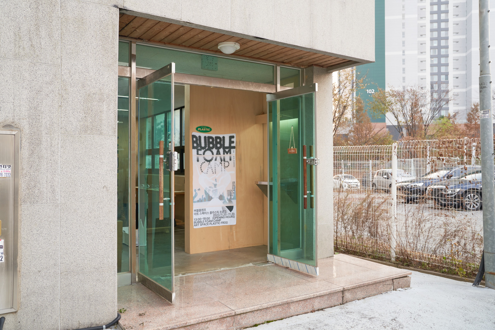
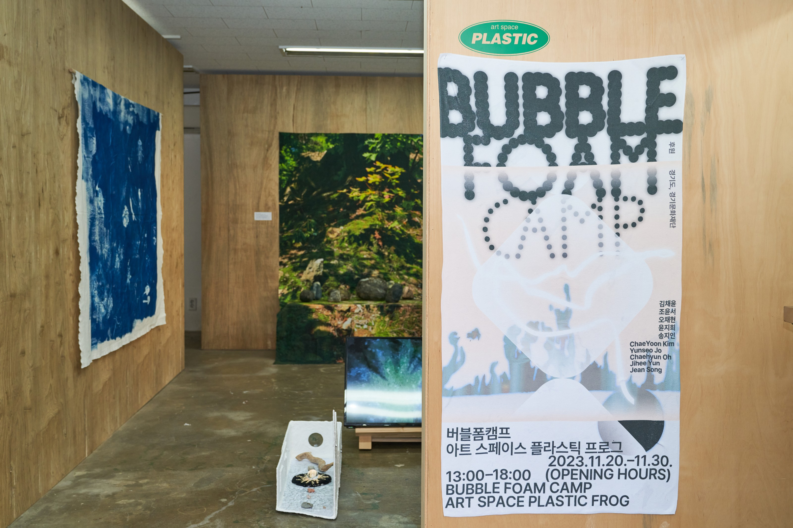
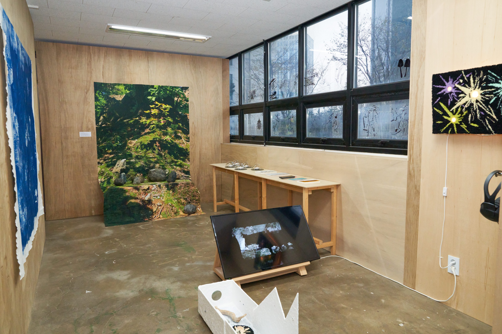
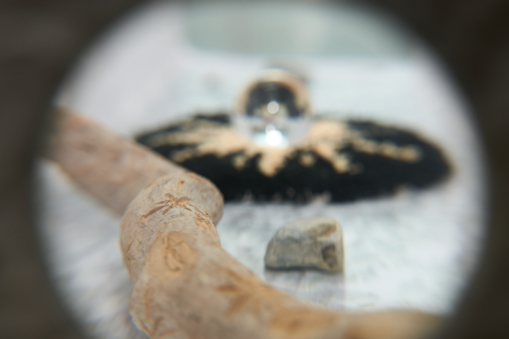
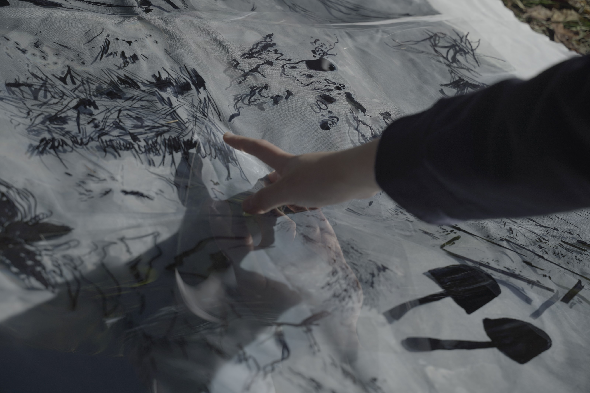
전시 기간 아트스페이스 플라스틱프로그, 고양 Artspace Plasticfrog, Goyang, KR
숨을 쉬는 모든 생명체는 각자의 특정한 감각과 지각적 특수성으로 환경을 유지하고 구축한다. 동물의 기호학을 창출한 야곱 폰 윅스퀼(Jakob von Uexkull, 1864-1944)은 모든 동물이 자기 주위를 일종의 ‘감각 거품(sensory bubble)’을 생성한다고 말한다. 이 거품은 인간을 포함한 모든 생명체에 둘러싸여 있으며, 각자의 다른 감각 거품을 온전히 감각하기는 불가능에 가깝다고 설명한다. 이는 그가 생각하는 동물의 생물학적 연구가 동물을 둘러싼 환경과 각자의 지각적 특수성에 달려있기 때문이다. 지구는 다양한 풍경과 질감, 소리, 진동, 냄새와 맛, 전기장, 자기장 등으로 가득 차 있다. 그러나 모든 동물은 현실의 극히 일부만을 향유할 수 있다. 여기서 인간도 예외는 아니다. 동물들이 각자의 감각기관으로 지각할 수 있는 버블(거품)을 형성하듯, 인간인 우리는 하나의 종으로서 생리학적 지각 기관이 협응할 수 있는 내에서 외재적 세계와 공명할 수 있다. 거품의 표면장력이 물리적 작동으로 모였다가 금세 방울방울 흩어지듯, 각자의 거품들 속에서 인간과 생명체는 공존하고 살아간다. Bubble Foam Camp는 초록색이 없는 생태예술프로젝트로, 실제 삶의 현상들을 꺼내와 ‘연대와 해산’의 관점에서 생태담론을 면밀히 탐구하고 살펴보고자 한다. 본 프로젝트는 ‘연대’하는 예술인의 수많은 버블들과 개별이 감각하고 느끼는 버블의 ‘해산’을 중점으로, 삶과 맞닿아있는 생태 예술 담론을 위한 2박 3일 워크숍 캠프를 진행했다. ⟪BUBBLE FOAM CAMP⟫는 워크숍 캠프의 결과를 공유하는 자리로 각각의 소모임 구성원을 하나의 구별된 종으로 인식하고, 개별의 생태와 사회를 감각하는 다양한 방법을 공유하고자 한다. *버블 앤 폼은 연대와 해산의 상징적 표현이다. 영문으로 ‘거품’은 버블(풍선껌) 또는 폼(foam)으로 통칭된다. 버블은 ‘속이 빈 방울’이자 개별적으로 존재하는 방울을 표현한다. 이에 반해 폼은 버블들이 여러 개가 모인 상태를 말한다.